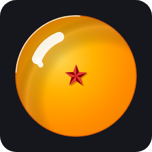
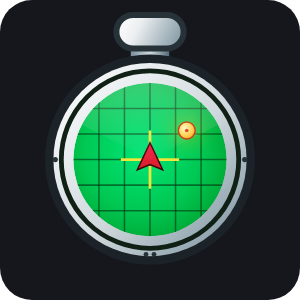
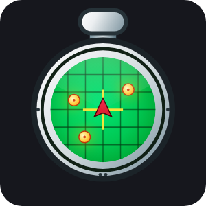
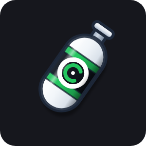
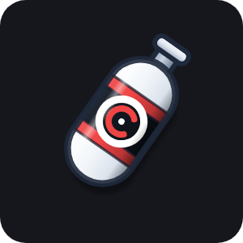
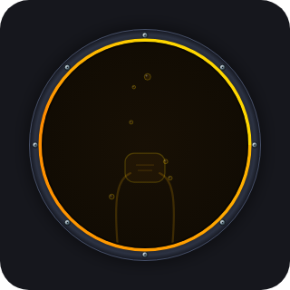
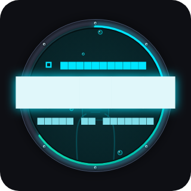
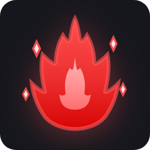
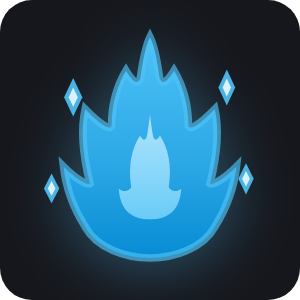
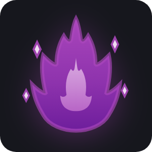

Design System, Ergonomia & UI/UX
O Gym Saiyajin foi projetado sob uma premissa fundamental de design esportivo mobile: a interface precisa funcionar com perfeição e clareza no ambiente real da academia, onde o atleta está ofegante, com as mãos suadas, sob fadiga muscular intensa, luzes adversas e com pouco tempo para interações lentas ou botões diminutos.
A identidade visual combina o rigor e a sobriedade dos principais aplicativos de alto rendimento (Hevy, Nike Training Club, Adidas Running) com a temática épica e motivacional de Dragon Ball Z, evitando qualquer tom infantilizado em favor de uma estética dark minimalista, nobre e funcional.
🏛️ 1. Princípios Fundamentais de UX
graph TD
A[Princípios de UX] --> B[Ergonomia sob Fadiga]
A --> C[Velocidade de Input]
A --> D[Proteção contra Erros]
A --> E[Feedback Háptico & Visual]
B --> B1[Alvos de toque mínimos de 44-48dp]
B --> B2[Zero rolagem desnecessária no treino]
C --> C1[Fluxo contínuo de teclado Next -> Done]
C --> C2[Preenchimento em 1 toque da Carga Anterior]
D --> D1[Confirmação em encerramento com pendências]
D --> D2[Swipe protegido para deletar séries]
E --> E1[Vibração háptica de seleção e impacto]
E --> E2[Micro-badges de PRs em tempo real]1. Ergonomia sob Fadiga Física
- Zonas de Toque Amplas: Todos os botões primários e seletores respeitam o padrão mínimo de 44×44 dp a 48×48 dp, garantindo que o dedo acerte o alvo mesmo com tremor muscular pós-série.
- Leitura Instantânea em Espelho: Valores numéricos essenciais (carga, repetições, cronômetro de descanso) utilizam tipografia de alto contraste com peso
w800aw900, permitindo que o atleta leia a tela a um braço de distância enquanto descansa no banco.
2. Fluxo de Input de Cargas Ultrarrápido
- Navegação Contínua de Foco: O campo de Peso possui ação de teclado
TextInputAction.next, pulando o cursor imediatamente para o campo de Reps; o campo de Reps possui açãoTextInputAction.done, que valida e conclui a série imediatamente (check), mantendo a fluidez sem exigir toques manuais adicionais. - Estabilidade de Foco Blindada: Os controllers de texto preservam o foco e o estado interno contra rebuilds automáticos provocados por ticks periódicos do cronômetro regressivo.
- Sugestão de Carga Anterior (Progressive Overload): Ao iniciar qualquer exercício, os valores da última sessão concluída são apresentados suavemente como
hintTexte em uma linha discreta de apoio. Caso o atleta toque no botão de check com os inputs vazios, o app preenche automaticamente a série com a carga anterior.
3. Feedback Háptico e Sonoro
- Impacto Tátil (
vibration): Ações determinantes (concluir série, bater recorde, alternar entre modos, disparar o cronômetro) ativam feedbacks hápticos nativos (HapticFeedback.selectionClick,mediumImpacteheavyImpact). - Sinalização Sonora de Fim de Descanso: Alerta nativo de alarme via
flutter_ringtone_playercom cancelamento atômico, garantindo que o atleta saiba exatamente a hora de iniciar a próxima série mesmo com fones de ouvido ou com o celular no chão.
🎨 2. Design Tokens & Cores (AppColors)
A paleta é construída sobre uma base OLED True Dark, minimizando o consumo de bateria durante treinos longos e eliminando o ofuscamento visual em ambientes escuros de academia:
┌─────────────────────────────────────────────────────────────┐
│ PALETA PRINCIPAL │
├───────────────────┬─────────────────────────────────────────┤
│ Background │ #000000 (Preto profundo OLED) │
│ Surface │ #1E1E1E (Elevação de cards e painéis) │
│ Card Border │ #2C2C2C (Bordas sutis com 1px) │
│ Primary (Saiyajin)│ #FF8C00 (Laranja Ki vibrante) │
│ Accent (Ouro SSJ) │ #FFD700 (Dourado Super Saiyajin / PRs) │
│ Text Light │ #FFFFFF (Texto primário de alta leitura)│
│ Text Dimmed │ #AAAAAA (Rótulos e legendas auxiliares) │
│ Text Muted │ #757575 (Textos terciários/desativados) │
│ Success │ #00E676 (Verde de conclusão) │
│ Danger │ #FF4444 (Vermelho de perigo/exclusão) │
└───────────────────┴─────────────────────────────────────────┘
Paleta dos Patamares de Poder (Transformações)
Cada nível de Ki possui uma identidade cromática exclusiva aplicada em auras, badges, bordas e na lente do Scouter:
| Patamar | Cor Principal | Hex | Lente do Scouter | Significado Semiótico |
|---|---|---|---|---|
| Classe Baixa | Cinza Neutro | #757575 |
#757575 |
O guerreiro no início da sua escalada de força. |
| Guerreiro Z | Verde Namekusei | #4CAF50 |
#4CAF50 |
Vitalidade, consistência e disciplina em evolução. |
| Elite Saiyajin | Azul Príncipe | #2196F3 |
#2196F3 |
Foco inabalável e intensidade de guerreiro nato. |
| Super Saiyajin | Ouro Clássico | #FFD700 |
#FFD700 |
A explosão lendária de força e quebra de barreiras. |
| Super Saiyajin 2 | Âmbar Elétrico | #FF9E00 |
#00E5FF (Ciano) |
Borda âmbar com lente ciano em alusão aos raios bioelétricos. |
| Super Saiyajin 3 | Laranja Vulcânico | #FF5722 |
#FF5722 |
Potência máxima que estremece a estrutura física. |
| Instinto Superior | Prata Celestial | #E0E6ED |
#80D8FF |
Maestria técnica e estado divino de reflexos puros. |
📱 3. Anatomia Visual dos Componentes
1. Série Row (SerieRowWidget)

A linha de execução da série é a unidade mais utilizada do aplicativo, demandando simetria milimétrica:
┌─────────────────────────────────────────────────────────────┐
│ ┌─────┐ PESO (KG) REPS │
│ │PR ⚡│ ┌────────────┐ ┌────────────┐ ┌────────────┐ │
│ │ (1) │ │ 80 │ │ 10 │ │ ✓ │ │
│ └─────┘ └────────────┘ └────────────┘ └────────────┘ │
│ [Stack] [Input Núm.] [Input Núm.] [Botão Check] │
└─────────────────────────────────────────────────────────────┘
- Micro-Badge de PR em
Stack(clipBehavior: Clip.none): - Posicionado
top: -8diretamente acima do círculo da série. - Zero impacto na largura horizontal: não empurra nem espreme os campos de Peso e Reps em celulares estreitos (360dp).
- Visual Dark Outline: Mantém fundo escuro
#14161Ecom borda fina dourada e sombra preta. Quando o círculo da série é concluído e ganha preenchimento amarelo brilhante, o micro-badge escuro por cima cria um contraste de alto relevo nítido e elegante, sem se fundir na cor de fundo. - Ícone Vetorial Nativo: Exibe a mini Esfera do Dragão de 1 estrela
DragonBallIcon(size: 10, stars: 1)na série ativa que quebrou recorde. - Classificação Biomecânica Interativa (
TipoSerie): - Toque curto no indicador circular alterna ciclicamente entre Série de Trabalho (
N/ numeração sequencial1, 2, 3...), Aquecimento (W/ ícone vetorialKintoUnIcondourado que blinda o 1RM e impede falsos PRs), Drop-set (Dlaranja Saiyajin) e Falha Total (Frubro Kaioken, atribuindo automaticamenteRIR 0 • RPE 10). - Toque longo abre um modal descritivo com a função fisiológica de cada tipo de série.
- Seletor Retrátil de Esforço (
RIR / RPE): - Pill compacto na base da série que expande horizontalmente os chips de Reps in Reserve (
RIR 0aRIR 4+/RPE 10aRPE 6) sob demanda, sem adicionar altura permanente nem distrair a digitação rápida de carga e repetições.
2. Escotilha da Câmara de Regeneração / Cronômetro de Descanso (CronometroWidget)

- Estética de Escotilha Industrial de Namekusei:
- Aro Metálico de Titânio: Moldura circular escura chanfrada em 3D com 8 rebites prateados chanfrados simétricos com fenda e ponto de reflexo.
- Anel de Fluido Bioenergético Saiyajin: Arco de progresso em gradiente de Ouro Super Saiyajin e Laranja Ki (
#FFD700\(\to\)#FF8C00), com halo luminescente (glow) ativo enquanto o cronômetro roda. - Efervescência & Micro-Bolhas Animadas: Bolhas de oxigênio procedurais subindo continuamente pelo líquido com oscilação senoidal lateral. A animação é executada exclusivamente enquanto o timer está contando, economizando 100% de bateria e CPU em repouso ou pausa.
- Silhueta Submersa da Máscara: Silhueta discreta em tom âmbar da máscara respiratória com grelha e mangueiras sanfonadas ao fundo da câmara, conferindo profundidade sem prejudicar a leitura dos dígitos.
- Sincronização Matemática Exata (Eliminação do Delay de 1s):
- Eliminação do truncamento de
Duration.inSecondsvia cálculo com teto (ceil), assegurando que \(\lceil \text{tempoRestante} \rceil + \lfloor \text{tempoDecorrido} \rfloor = \text{tempoTotal}\). - Ao iniciar um descanso de 120s (
02:00), ele permanece em02:00pelo primeiro segundo completo e desce em sincronia milissegundo a milissegundo com o contador de descanso acumulado. - Telemetria Médica & Dígitos:
- Chip superior de status dinâmico:
REGENERAÇÃOcom LED pulsante dourado quando ativo,PAUSADOem âmbar eCÂMARA DE CURAem repouso. - Dígitos numéricos em grande escala (
38dp, peso 900) com sombra luminescente para leitura imediata no espelho. - Modal de Ajuste de Tempo:
- Botões satélites
+/- 15spara correções rápidas sem digitação. - Grade simétrica 3×2 de atalhos rápidos (
00:45,1:00,1:30,2:00,3:00,4:00).
3. Linha do Tempo, Identificação de PRs & Rótulos de Séries (HistoricoScreen & HistoricoCardWidget)
- Alinhamento em Linha Única Fluida:
- Reúne em um único
Wraphorizontal: Data do Treino (21/09/2026), Tag de Divisão/Nome ([ COSTAS E BÍCEPS ]) com fundo escuro e borda âmbar, e o Badge Dourado de PRs ([ ✪ 2 PRs ]) estilizado com a Esfera do Dragão. - Alinhamento à direita exclusivo para o Menu Popup Unificado (
⋮), eliminando múltiplos botões avulsos na tela e reduzindo drasticamente a sobrecarga cognitiva. - Transição Inteligente do Badge
[🟠 PR]no Card de Exercício: - Card Recolhido: Exibe o badge
[🟠 PR](DragonBallIcon(size: 11, stars: 1)) no subtítulo do cabeçalho do exercício ao lado de[GRUPO] X SÉRIES, permitindo escanear instantaneamente quais exercícios bateram recorde naquela sessão sem precisar abrir todos os cards. - Card Expandido: O badge do cabeçalho desaparece automaticamente e o
[🟠 PR]é exibido exclusivamente na linha da série ápice vencedora daquele exercício, evitando redundância visual de dois badges próximos. - Padronização de Rótulos de Séries (Estilo Hevy):
- Tanto no Histórico (
HistoricoCardWidget) quanto nos Exercícios Concluídos da Tela de Treino (TreinoScreen), cada linha exibe seu rótulo descritivo real (Serie.obterRotuloHistorico) sincronizado com o indicador circular:(☁️) Aquecimentopara séries preparatórias;(1) Série 1,(2) Série 2, ... apenas para séries de trabalho (normal);(D) Drop-sete(F) Falhapara séries de intensidade avançada.
- Nó Uniforme de Calendário:
- Nó circular com
Icons.calendar_monthem laranja Saiyajin com sombra e borda suave em todos os marcos da timeline. - Métricas de Sessão em Caixa Alta:
- Tipografia de impacto esportivo e espaçamento balanceado:
6 EXERCÍCIOS • 23 SÉRIES • VOLUME: 8224 kg • 1 min • 1 min
4. Modal de Edição de Sessões Salvas
- Campos Editáveis:
- Data da sessão (com seletor nativo
DatePicker). - Nome / Divisão do treino com campo de texto e sugestões rápidas.
- Duração total do treino e tempo acumulado de descanso.
- Steppers Ergonômicos (+/- 5 min):
- Botões dedicados
[-] 5 mine[+] 5 mincom alvos de toque generosos (mínimo de 44dp), alinhados à mesma convenção do cronômetro da tela de treino. - Salvaguarda Fisiológica:
- O sistema impede matematicamente que o tempo de descanso ultrapasse a duração total do treino (
descanso <= duracao), prevenindo inconsistências em relatórios analíticos e nos cálculos do Caminho da Serpente.
5. Miniaturas Fixas, Execução Sob Demanda & Gestão de Exercícios Personalizados (ExercicioThumbnailWidget & SeletorMidiaCatalogoModal)
- Estabilidade de Layout no Cabeçalho do Exercício Ativo:
- A miniatura (
52×52 dp) permanece ancorada na lateral esquerda do card do exercício ativo naTreinoScreen, garantindo posição fixa independentemente de o nome do exercício ocupar 1 ou 2 linhas. - O indicador circular de play integrado sobre o canto inferior direito da miniatura elimina a necessidade de botões redundantes de texto ("Ver Execução"), preservando a limpeza visual.
- Execução Animada Sob Demanda (
ExercicioDetalheModal): - Ao tocar em qualquer miniatura (na Tela de Treino, na fila de próximos, no Gerenciador de Fichas, no Histórico, no Registro de Poder, no Gráfico de Progressão ou no seletor), abre-se o modal com o GIF animado (
180×180), equipamento, músculo alvo, músculos sinergistas e instruções técnicas passo a passo em português. - Gráfico de Progressão de Carga (
ProgressoGraficoWidget): - Espaçamento Inteligente no Eixo X: Limita dinamicamente a exibição a no máximo 5 datas uniformemente espaçadas (garantindo sempre a primeira e a última sessão), prevenindo sobreposição visual independentemente da quantidade de treinos acumulados.
- Tooltip Interativo Completo: Ao tocar sobre qualquer ponto da curva, exibe o balão com a carga máxima e repetições (
110 kg × 8) e a data completa (30/09/2026). - Filtro Rápido de Janela Temporal: Alternância instantânea entre
ÚLTIMOS 10,3 MESESeTUDO. - Formulário Simétrico de Exercício Personalizado (
SelecaoExercicioModal): - Grid 4×2 de Grupos Musculares: Os 8 grupos (
PEITO,COSTAS,PERNAS,OMBROS,BÍCEPS,TRÍCEPS,ABDÔMEN,OUTROS) são distribuídos em 2 linhas simétricas de 4 colunas (Expanded), evitando quebras irregulares deWrap. - Seção de Mídia Unificada: Permite vincular qualquer uma das 106 animações 100% offline do catálogo (
SeletorMidiaCatalogoModal) ou enviar foto/GIF próprio da Galeria ou Câmera por meio de 3 botões proporcionais lado a lado (Catálogo,Galeria,Câmera), além de suportar edição em cascata, exclusão e mesclagem de histórico (AssociarExercicioModal).
6. Mapa de Calor Muscular Frontal & Dorsal (ScouterAnatomicoWidget)
- Cabeçalho Direto & Janela Temporal (
7 DIAS/30 DIAS): - Título em caixa alta
MAPA DE CALOR MUSCULARacompanhado do seletor de período (7 DIASou30 DIAS), ajustando proporcionalmente as metas fisiológicas de séries semanais/mensais. - Renderização SVG em Dupla Camada para Nitidez de Contorno (
muscle_mapper): - Camada 1 (
DarkThemeAnatomyProvider): Colore os grupos musculares ativos e renderiza os músculos em repouso em cinza-azulado visível (#2D3748) sobre o fundo escuro do card. - Camada 2 (
_OverlayLinhasAnatomicas): Sobrepõe exclusivamente os contornos anatômicos internos (fill-opacity:0) normalizandostroke-width="3.49"(Frontal) estroke-width="3.55"(Dorsal) para2.2em branco/prata translúcido (stroke-opacity="0.45"), garantindo que todas as divisões musculares permaneçam nítidas em ambas as vistas mesmo quando múltiplos grupos adjacentes estão iluminados em amarelo/ciano/vermelho. - Notação Limpa de Séries:
- Legenda (
0,1-5,6-12,13+) e chips de telemetria sem o sufixo"s", eliminando qualquer ambiguidade visual com a unidade de tempo (segundos).
📸 4. Estúdio de Compartilhamento Social (UX Imersiva)
O gerador de cartões sociais foi construído com arquitetura de estúdio em tela cheia (Dialog.fullscreen), eliminando qualquer sensação de caixa flutuante espremida:
graph TD
A[Estúdio de Compartilhamento] --> B[Header Fixo]
A --> C[Área Central Flexível FittedBox]
A --> D[Dock Inferior de Controles SafeArea]
B --> B1[Fechar X]
B --> B2[COMPARTILHE SEU PROGRESSO]
B --> B3[Botão COMPARTILHAR Dourado]
C --> C1[Card Stories 9:16 ou Feed 1:1]
C --> C2[Adaptação dinâmica sem cortes em qualquer tela]
D --> D1[Linha 1: Seletor de Presets com Setas, Indicador de Dots e Swipe]
D --> D2[Linha 2: Seletor de Proporção Stories vs Feed 44dp]
D --> D3[Linha 3: Ações de Foto Câmera, Galeria, Remover 46dp]
D --> D4[Linha 4: Campo @handle 46dp com botão de limpar e Done]As 3 Soluções de Presets Gráficos:
1. Slim Clássico (Espelho de Musculação)
- Desobstrução Total do Físico: Apenas o badge da divisão fica centralizado no topo. As métricas esportivas (
Duração,Volume,Séries) ficam na base, logo acima da marcaGYM SAIYAJINe da data/@handle. - PRs Contextuais Sem Ruído Visual: Quando há recordes pessoais batidos na sessão, uma 4ª métrica
PR/PRs(singular ou plural) aparece na base, usando exatamente o mesmo componente tipográfico das outras métricas — sem ícones, sem elementos decorativos extras. Filosofia: a informação existe, mas não compete com a foto. - Benefício de UX: Deixa 100% da área da cabeça, rosto e peitoral desimpedidos, valorizando a foto real tirada no espelho.
2. Scouter HUD (Telemetria Saiyajin Stealth)
- Topo: Divisão do treino no canto esquerdo e Carimbo Scouter holográfico no canto direito (
+X Kicom lente vetorialScouterIconreativa à transformação e patamar). - Moldura Neutra & Foco na Foto: Tanto o carimbo quanto o dock inferior utilizam bordas neutras ultrafinas (
Colors.white18) e vidro fumê translúcido, eliminando contornos neon invasivos para que a foto do físico seja o centro das atenções. - Dock de Telemetria Unificada na Base: Um único container translúcido unindo métricas, contagem contextual de PRs obtidos na sessão (
DragonBallIconcom1 PR/2 PRs), divisor fino e a marca com data/@handle.
3. Rodapé Minimalista (Ancorado)
- Topo e Centro 100% Limpos: Toda a informação é consolidada em um dock translúcido ancorado na base com cantos arredondados, margens seguras para Instagram Stories e tipografia em branco puro com sombra (evitando blocos de cor saturada concorrentes).
- Suporte a PRs e Badge Neutro: Exibe a divisão do treino em branco puro, o patamar em chip fosco discreto e a contagem contextual de PRs.
Tipografia de Alto Contraste Nativa
- Padronizada em branco puro (
Colors.white) com sombra multinível preta quádrupla (Shadow), garantindo leitura cristalina em qualquer foto (seja com iluminação clara ou sombra profunda).
🔮 5. Componentes Vetoriais Proprietários (CustomPainter)
Substituímos o uso de emojis convencionais por arte vetorial matemática renderizada via código direto no Canvas:
DragonBallIcon

- Renderização:
- Esfera com gradiente radial esférico âmbar/laranja profundo (
#FFB703\(\to\)#FB8500). - Brilho especular translúcido simulando reflexo de cristal/acrílico.
- Estrelas vermelhas de 5 pontas desenhadas matematicamente com funções trigonométricas (\(\cos/\sin\) a cada \(72^\circ\)).
- Suporte procedural de 1 a 7 estrelas, distribuídas dinamicamente em anel e centro.
- Papel na Interface: Marcador de prestígio de Recordes Pessoais (PRs) no card social e no Quadro de Recordes.
ScouterIcon
- Renderização:
- Haste auricular ergonômica com pinos e juntas mecânicas.
- Lente translúcida frontal chanfrada em acrílico com cores reativas à transformação ativa.
- Retículo de mira/alvo interno digital e linhas de telemetria estilizadas.
- Papel na Interface: Identificador de telemetria no modo Scouter HUD e ícone de Ki na finalização do treino.
DragonRadarIcon


- Renderização:
- Gabinete metálico circular com bisel prateado chanfrado e botão de cronômetro superior (dial).
- Visor CRT/LCD verde esmeralda com grade ortogonal de coordenadas e arco especular de vidro curvo.
- Cursor central com triângulo rubi direcionador e retículo em cruz amarelo.
- Esferas do Dragão luminosas dinâmicas rastreadas na tela (
dots, de 0 a 7) com brilho âmbar radial. - Papel na Interface: Gamificação da frequência semanal no card de Meta Semanal (cada dia treinado na semana acende uma esfera no radar).
CapsuleIcon



- Renderização:
- Cápsula Hoi-Poi cilíndrica com calotas hemisféricas peroladas em branco/prata com reflexo curvo de vidro.
- Botão metálico de acionamento no topo (push trigger com haste cilíndrica e anel de retenção).
- Faixas coloridas vibrantes (com suporte a azul clássico Capsule Corp, laranja Saiyajin, verde e vermelho).
- Faixa central preta técnica com o logotipo circular canônico da Capsule Corp (monograma em "C" concêntrico).
- Orientação isométrica dinâmica (~35°) e iluminação 3D longitudinal com sombra projetada.
- Papel na Interface: Representação oficial do card de Composição Corporal e Medidas (IMC e Percentual de Gordura) no Dashboard de Progresso.
PlanetaKaiohIcon

- Renderização:
- Mini-planeta esférico cel-shaded com gradiente radial verde grama com iluminação volumétrica 3D (
#7CB342\(\to\)#33691E). - Estrada anelar circular branca com perspectiva curvada em torno do equador do planeta.
- O lendário carro conversível vintage esportivo vermelho do Sr. Kaioh estacionado sobre a pista.
- Casa principal esférica em domo bege com telhado marrom tradicional e anexo/garagem lateral.
- Copas densas de árvores arredondadas distribuídas na borda e atmosfera sutil translúcida.
- Papel na Interface: Destino épico no final do Caminho da Serpente em
CaminhoSerpenteProgressBar.
CaminhoSerpenteProgressBar
- Renderização:
- Curva senoidal matemática contínua e suave (\(y = \text{midY} - A \cdot \sin(t \cdot 2.5 \cdot 2\pi)\)) simulando a serpente que serpenteia pelo Outro Mundo.
- Fundo com nuvens celestiais douradas e drop shadow conferindo profundidade espacial.
- Ponto de Ki dinâmico do guerreiro com aura brilhante proporcional à porcentagem percorrida rumo a 1.000.000 km.
- Ponto de chegada ornamentado diretamente com o
PlanetaKaiohPainter. - Selo marcial oficial do Senhor Kaioh (界王) em tipografia destacada com aro dourado no topo do card.
EscotilhaCamaraPainter



- Renderização:
- Aro circular exterior em liga escura de titânio chanfrada em 3D com 8 rebites prateados chanfrados simétricos com fenda e ponto de reflexo especular.
- Anel de fluido bioenergético em gradiente Ouro Super Saiyajin e Âmbar (
#FFD700\(\to\)#FF8C00), com halo luminescente (glow) ativo enquanto o cronômetro roda. - Vidro escurecido com fluido de Ki translúcido em profundidade e reflexo curvo de curvatura acrílica.
- Silhueta sutil da máscara de oxigênio submersa ao fundo com grelha e mangueiras sanfonadas.
- Micro-bolhas procedurais de oxigênio subindo continuamente com oscilação senoidal lateral.
- Papel na Interface: Renderização da escotilha da câmara de regeneração no cronômetro circular de descanso (
CronometroWidget) na Tela de Treino.
KiAuraIcon & KiAuraPainter




- Renderização:
- Silhueta canônica de labareda de Ki com línguas de fogo ascendentes e pontiagudas (upward energy tongues), com pico central proeminente e cristas laterais afiadas.
- Gradiente vertical de energia com contorno de realce luminoso.
- Núcleo interno de alta densidade luminosa (Inner Core) quase branco, simulando superconcentração de poder.
- Halo difuso externo (Outer Glow) em
MaskFilter.blurpara efeito de irradiação energética. - Micro-centelhas e faíscas afiadas flutuantes em formato losangular ao redor da chama (Sparks).
- Suporte completo a customização dinâmica de cores por transformação Saiyajin (Ouro SSJ, Kaio-ken/Vermelho, Ciano Guerreiro Z, Roxo, etc.).
- Papel na Interface: Representação oficial do pilar de Vigor Saiyajin no
PoderLutaCardWidgete estado inerte noQuadroRecordesModal, eliminando o ícone genérico de raio (Icons.bolt).
KintoUnIcon & KintoUnPainter
- Renderização:
- Silhueta cel-shaded da Nuvem Voadora (Kinto-un) com cúpulas macias volumétricas e cauda aerodinâmica afilada à esquerda.
- Gradiente dourado luminoso (
#FFF59D\(\to\)#FFD700\(\to\)#FFA000) com contorno âmbar escuro e brilho especular superior. - Suporte configurável a halo difuso (
showGlow) e linhas horizontais de vento/velocidade (showTrail). - Papel na Interface: Insígnia oficial das séries de Aquecimento no indicador circular de
SerieRowWidget,HistoricoCardWidgeteTreinoScreen.
🛡️ 6. Diretrizes de Proteção de Layout & Acessibilidade
- Proteção Contra Barras do Sistema (
SafeArea&viewInsets): - Todo modal e tela implementa margens dinâmicas de
SafeArea, garantindo que a barra de navegação de 3 botões ou a linha gestual do Android nunca sobreponha botões ou inputs de texto. - Prevenção de Truncamento de Nomes:
- Todos os títulos longos de exercícios e rotinas utilizam
ExpandedeFlexiblecomTextOverflow.ellipsisou modo expandido com quebra de linha permitida. - Ocultação Condicional de Badges Zerados:
- No modal de encerramento do treino, métricas contextuais como PRs só são renderizadas quando presentes (
totalPrs > 0). Caso contrário, o elemento é ocultado e a métrica de Volume preenche 100% da largura, preservando a harmonia sem exibir "0 PRs (+0 Ki)". - Internacionalização Numérica dos Pesos:
- Cargas inteiras são exibidas sem decimais (
100 kg), e cargas fracionárias exibem apenas uma casa decimal limpa (12.5 kg). - Volumes e pontuações de Ki acima de 1.000 são pontuados automaticamente (
27.080 kg,+15.200 Ki).
🥋 7. Manifesto de Identidade: Seriedade Esportiva vs Temática Saiyajin
O Gym Saiyajin é, primordialmente, uma ferramenta de musculação e performance de força real. A aplicação de temáticas de anime no design de software corre um risco crônico e documentado: a caricatura infantilizada, na qual piadas internas, slogans gritados ou excesso de referências transformam a ferramenta em um brinquedo, gerando constrangimento ao ser utilizado no ambiente da academia.
Para blindar o aplicativo contra qualquer caricatura e manter a máxima sofisticação técnica, foram estabelecidas quatro diretrizes irrevogáveis de produto:
graph TD
A[Identidade Gym Saiyajin] --> B[1. Fisiologia & Ergonomia em 1º Lugar]
A --> C[2. Lore Canônica como Fisiologia & Tech]
A --> D[3. Tom de Voz Marcial & Estoico]
A --> E[4. Estética Dark Tech Esportivo]
B --> B1[Dados brutos inalterados: Carga, Reps, 1RM, Volume]
C --> C1[Câmara = Recuperação de ATP; Serpente = Constância]
D --> D1[Sem gritos de anime ou piadas; comunicação enxuta e firme]
E --> E1[Zero rostos/stickers; apenas símbolos vetoriais industriais]1. Fisiologia e Ergonomia Sempre em Primeiro Lugar
- Termos Técnicos Preservados: A tela de treino nunca substitui os termos essenciais da musculação por gírias. Carga (kg), Reps, Volume, 1RM (Fórmula de Epley Refinada), Séries e Tempo de Descanso permanecem explícitos e destacados.
- Leitura em Situação de Exaustão: Um atleta ofegante entre séries pesadas não pode perder tempo decifrando metáforas lúdicas. A telemetria esportiva é prioridade absoluta.
2. Lore Canônica como Metáfora de Alta Tecnologia & Fisiologia
Em vez de magia mística descontextualizada, os elementos de Dragon Ball Z são mapeados diretamente para a ciência do treinamento de força: - Câmara de Regeneração Médica: Representa a biotecnologia de cura de tecidos, tamponamento de íons \(H^+\) e restauração dos estoques de fosfocreatina (ATP-CP). - Caminho da Serpente: Representa a jornada de constância e disciplina de anos; a meta de 1.000.000 km é um odômetro real de hipertrofia acumulada. - Cápsulas Hoi-Poi: Representa a engenharia da Capsule Corp compactando fichas e rotinas completas em estojos organizados. - Poder de Luta (Ki): Uma pontuação composta por força máxima nos 6 grupos musculares e capacidade total de trabalho.
3. Tom de Voz Marcial e Estoico (Anti-Caricatura)
- O que é estritamente proibido:
- Gritos de anime em caixa alta exagerados ("KAMEHAMEHA!", "VOU TE DESTRUIR!").
- Troca de nomes de exercícios por golpes (ex: proibir "Supino Genki Dama").
- Citações infantis ou ofensivas fora de contexto ("Você é um verme").
- O que é adotado:
- Comunicação firme, concisa e disciplinada (inspirada no foco de Goku e Vegeta na Sala do Tempo, ou Piccolo meditando): "Regeneração Concluída", "Prepare-se para a próxima série", "Encerrar Batalha", "Consolide seus ganhos".
4. Estética Visual "Dark Tech Esportivo"
- Zero Stickers de Personagens: O app não exibe ilustrações literais de rostos de anime na interface de treino.
- Ícones Cel-Shaded Vetoriais Nativos: Todos os ícones (
CapsuleIcon,KiAuraIcon,DragonBallIcon,ScouterIcon,PlanetaKaiohIcon) são geométricos, limpos e renderizados diretamente no Canvas do Flutter com acabamento industrial. - Percepção Visual Externa: Qualquer pessoa a 1 metro de distância na academia enxerga uma interface escura, elegante, moderna e de alto padrão (semelhante a dashboards da Garmin, Strava ou Strong).